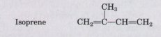
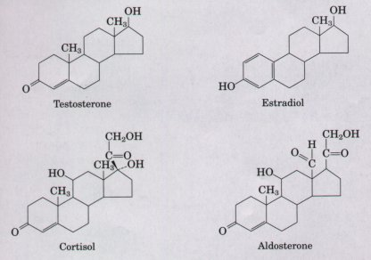
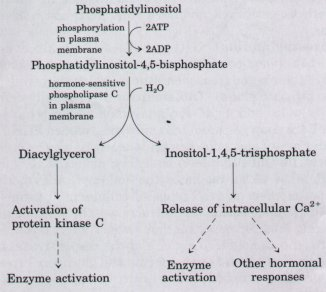
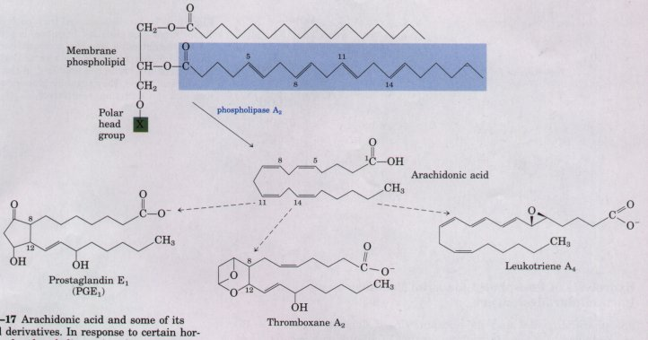
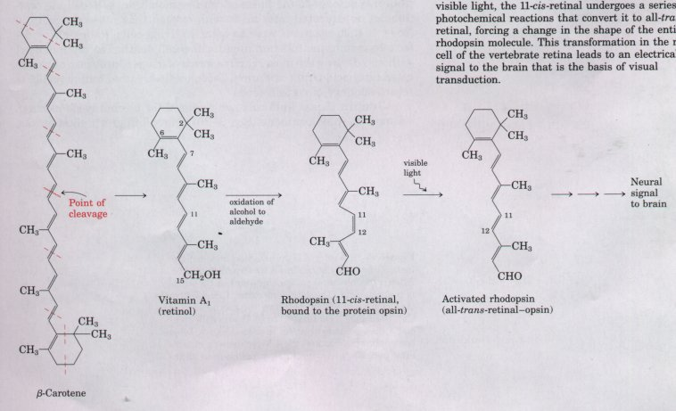
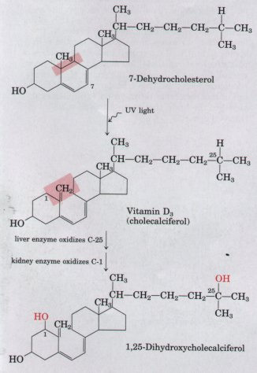
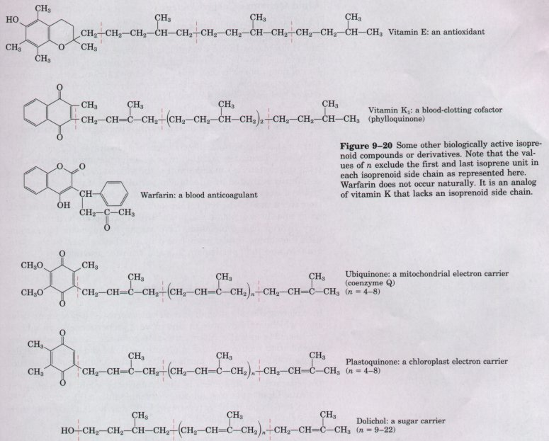
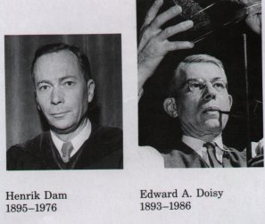

The two classes of lipids considered thus far (storage lipids and structural lipids) are major cellular components; membrane lipids represent 5 to 10% of the dry mass of most cells, and storage lipids, more than 50% of the mass of an adipocyte. With some important exceptions, these lipids play a passiue role in the cell; fuels are acted on by oxidative enzymes, and lipid membranes form impermeable barriers that separate cellular compartments. Another group of lipids, although relatively minor cellular components on a mass basis, have specific and essential biological activities. These include hundreds of steroidscompounds that share the four-ring steroid nucleus but are more polar than cholesterol-and large numbers of isoprenoids, which are synthesized from five-carbon precursors related to isoprene:

The isoprenoids include vitamins A, D, E, and K, first recognized as fatty materials essential to the normal growth of animals, and numerous biological pigments. Other "active" lipids serve as essential cofactors for enzymes, as electron carriers, or as intracellular signals. To illustrate the range of their structures and biological activities we will briefly describe a few of these compounds. In later chapters, their synthesis and biological roles will be considered in more detail.
| The major groups of steroid hormones are the male and female sex hormones and the hormones of the adrenal cortex, cortisol and aldosterone (Fig. 9-15). All of these hormones contain an intact steroid nucleus. They are produced in one tissue and carried in the bloodstream to target tissues, where they bind to highly specific receptor proteins and trigger changes in gene expression and metabolism. Because of the very high affmity of receptor for hormone, very low concentrations of hormone (as low as 10-9 M) sufiice to produce the effect on target tissues. These hormones and their actions are described in more detail in Chapter 22. |  Figure 9-15 Steroids derived from cholesterol. Testosterone, the male sex hormone, is produced in the testes. Estradiol, one of the female hormones, is produced in the ovaries and placenta. Cortisol and aldosterone are hormones produced in the cortex of the adrenal gland; they regulate glucose metabolism and salt excretion, respectively. |
| Phosphatidylinositol and its phosphorylated derivatives (Fig. 9-16) are components of the plasma membranes of all eukaryotic cells. They serve as a reservoir of messenger molecules that are released inside the cell when certain extracellular signals interact with specific receptors in the plasma membrane. For example, when the hormone vasopressin binds to receptor molecules in the plasma membranes of cells in the kidney and the blood vessels, a specific phospholipase in the membrane is activated. This phospholipase breaks the bond between glycerol and phosphate in phosphatidylinositol-4,5-bisphosphate (Fig. 9-16), releasing two products: inositol-1,4,5-trisphosphate and diacylglycerol. Inositol-1,4,5-trisphosphate causes the release of Ca2+ sequestered in membrane-bounded compartments of the cell, triggering the activation of a variety of Ca2+-dependent enzymes and hormonal responses. Diacylglycerol binds to and activates an enzyme, protein kinase C, that transfers phosphate groups from ATP to several cytosolic proteins, thereby altering their enzymatic activities. |  Figure 9-16 Phosphatidylinositol-4,5-bisphosphate, formed in the plasma membrane by phosphorylation of phosphatidylinositol, is hydrolyzed by a specific phospholipase C in response to hormonal signals. Both of the products of hydrolysis act as intracellular messengers. |

Figure 9-17 Arachidonic acid and some of its eicosanoid derivatives. In response to certain hormonal signals, phospholipase A2 releases arachidonic acid (arachidonate at pH 7) from membrane phospholipids; arachidonic acid then serves as a precursor to various eicosanoids. These include prostaglandins such as PGE1, in which carbon atoms 8 and 12 of arachidonic acid are joined to form the characteristic five-membered ring; thromboxane A2, in which carbons 8 and 12 are joined and an oxygen atom is added to form the sixmembered ring; and leukotriene A, containing a series of three conjugated double bonds. Aspirin and ibuprofen block the formation of prostaglandins and thromboxanes from arachidonic acid.
Eicosanoids (Fig. 9-17) are fatty acid derivatives with a variety of extremely potent hormonelike actions on various tissues of vertebrate animals. Unlike hormones, they are not transported between tissues in the blood, but act on the tissue in which they are produced. This family of compounds is known to be involved in reproductive function; in the inflammation, fever, and pain associated with injury or disease; in the formation of blood clots and the regulation of blood pressure; in gastric acid secretion; and in a variety of other processes important in human health or disease. More roles for the eicosanoids doubtless remain to be discovered.
Eicosanoids are all derived from the 20-carbon polyunsaturated fatty acid arachidonic acid, 20:4(Δ5,8,11,14) (Fig. 9-17), from which they take their general name (Greek eihosi, "twenty"). There are three classes of eicosanoids: prostaglandins, thromboxanes, and leukotrienes. Various eicosanoids are produced in different cell types by dif ferent synthetic pathways, and have different target cells and biological actions.
The prostaglandins (PG) (Fig. 9-17) all contain a five-membered ring of carbon atoms originally part of the chain of arachidonic acid. They derive their name from the tissue in which they were first recognized (the prostate gland). 'Iwo groups were originally defined: PGE, for ether-soluble, and PGF, for phosphate buffer-soluble (fosfczt in Swedish). Each contains numerous subtypes, named PGE1,, PGE2, etc. Prostaglandins are now known to act in many tissues by regulating the synthesis of the intracellular messenger molecule 3',5'-cyclic AMP (cAMP). Because cAMP mediates the action of many hormones, the prostaglandins affect a wide range of cellular and tissue functions. Some prostaglandins stimulate contraction of the smooth muscle of the uterus during labor or menstruation. Others affect blood flow to specific organs, the wake-sleep cycle, and the responsiveness of certain tissues to hormones such as epinephrine and glucagon. Prostaglandins in a third group elevate body temperature (producing fever) and cause inflammation, resulting in pain.
The thromboxanes, first isolated from blood platelets (also known as thrombocytes), have a six-membered ring containing an ether (Fig. 9-17). They are produced by platelets and act in formation of blood clots and the reduction of blood flow to the site of a clot.
Leukotrienes, found first in leukocytes, contain three conjugated double bonds (Fig. 9-17). They are powerful biological signals; for example, they induce contraction of the muscle lining the airways to the lung. Overproduction of leukotrienes causes asthmatic attacks. The strong contraction of the smooth muscles of the lung that occurs during anaphylactic shock is part of the potentially fatal allergic reaction in individuals hypersensitive to bee stings, penicillin, or various other agents.
During the first third of this century, a major focus of research in physiological chemistry was the identification of vitaminscompounds essential to the health of humans and other vertebrate animals that cannot by synthesized by these animals and must therefore be obtained in the diet. Early nutritional studies identified two general classes of such compounds: those soluble in nonpolar organic solvents (fat-soluble vitamins) and those that could be extracted from foods with aqueous solvents (water-soluble vitamins). Eventually the fat-soluble group was resolved into the four vitamins A, D, E, and K, all of which are isoprenoid compounds. Isoprenoids are synthesized by the condensation of isoprene units.

Figure 9-18 Vitamin A1 and its precursor, β-carotene. The isoprene structural units are set off by dashed red lines. Cleavage of β-carotene yields two molecules of vitamin A1 (retinol). Oxidation at C-15 converts retinol to the aldehyde, retinal. Rhodopsin, a visual pigment widely employed in nature, consists of retinal and the protein opsin. In the dark, retinal of rhodopsin is in the 11-cis form. When a rhodopsin molecule is excited with visible light, the 11-cis-retinal undergoes a series of photochemical reactions that convert it to all-transretinal, forcing a change in the shape of the entire rhodopsin molecule. This transformation in the rod cell of the vertebrate retina leads to an electrical signal to the brain that is the basis of visual transduction.
| Vitamin A (retinol)
(Fig. 9-18) is a pigment essential to vision. It was
first recognized as an essential nutritional factor for
laboratory animals, and was later isolated from fish
liver oils. Vitamin A itself does not occur in plants,
but many plants contain carotenoids, lightabsorbing
pigments that can be enzymatically converted into vitamin
A by most animals. Figure 9-18 shows, for example, how
vitamin A can be formed by cleavage of ,β-carotene, the
pigment that gives carrots, sweet potatoes, and other
yellow vegetables their characteristic color. Deficiency
of vitamin A leads to a variety of symptoms in humans and
experimental animals, which include dry skin,
xerophthalmia (dry eyes), dry mucous membranes, retarded
development and growth, sterility in male animals, and
night blindness, an early symptom commonly used in the
medical diagnosis of vitamin A deficiency. Vitamin D is a derivative of cholesterol and the precursor to a hormone essential in calcium and phosphate metabolism in vertebrate animals. Vitamin D3, also called cholecalciferol, is normally formed in the skin in a photochemical reaction driven by the ultraviolet component of sunlight (Figure 9-19). It is also abundant in fish liver oils, and is added to commercial milk as a nutritional supplement. Vitamin D3 itself is not biologically active, but it is the precursor of 1,25-dihydroxycholecalciferol, a potent hormone that regulates the uptake of calcium in the intestine and the balance of release and deposition of bone calcium and phosphate. Deficiency of vitamin D leads to defective bone formation, resulting in the disease rickets. |
 Figure 9-19 Vitamin D3 production and metabolism. Vitamin D3 is produced by irradiation of 7-dehydrocholesterol in the skin, and in the kidney is converted into the active hormone, 1,25-dihydroxycholecalciferol, which regulates the metabolism of Ca2+ and P043-. Dietary vitamin D prevents rickets, a disease once common in cold climates, where heavy clothing blocked the LTV component of sunlight necessary to vitamin D3 production in skin |

Figure 9-20 Some other biologically active isoprenoid compounds or derivatives. Note that the values of n exclude the first and last isoprene unit in each isoprenoid side chain as represented here. Warfarin does not occur naturally. It is an analog of vitamin K that lacks an isoprenoid side chain
Vitamin E (Fig. 9-20) is the collective name for a group of closely related lipids called tocopherols, all of which contain a substituted aromatic ring and a long hydrocarbon side chain. Tocopherols are found in hens' eggs and vegetable oils, and are especially abundant in wheat germ. Deficiency of vitamin E is very rare in humans, but when laboratory animals are fed diets depleted of vitamin E, they develop scaly skin, muscular weakness and wasting, and sterility. Tocopherols can undergo oxidation-reduction reactions on the aromatic ring. The vitamin activity of tocopherols likely results from their ability to prevent oxidative damage to the lipids of cellular membranes. Recall the reactions of unsaturated fatty acids with oxygen that cause rancidity in foods. If such reactions were to occur in living cells, the resulting defects in membrane function might cause cell death. Tocopherols react with and destroy the most reactive forms of oxygen, protecting unsaturated fatty acids from oxidation. Tocopherols are used commercially to retard spoilage of certain foods.
Vitamin K is a lipid cofactor required for normal blood clotting. Vitamin Kl (phylloquinone; Fig. 9-20) is found in green plant leaves,and a related form, vitamin K2 (menaquinone), is formed by bacteria residing in the animal intestine. The vitamin acts in the formation of prothrombin, a blood plasma protein essential in blood-clot formation. Prothrombin is a proteolytic enzyme that splits specific peptide bonds in the blood protein fibrinogen, converting it to fibrin, the insoluble, fibrous protein that holds blood clots together. Deficiency of vitamin K results in slowed blood clotting, which can be fatal to a wounded animal. Henrik Dam and Edward A. Doisy are given credit for having independently discovered the antihemorrhaghic action of vitamin K.
| Warfarin (Fig. 9-20) is a synthetic analog of vitamin K, which acts as a competitive inhibitor of prothrombin formation. It is extremely poisonous to rats, causing death by internal bleeding. Ironically, this potent rodenticide is also a valuable anticoagulant drug for the treatment of human patients in whom excessive blood clotting is dangeroussurgical patients and victims of coronary thrombosis. |  |
Lipid Quinones Carry Electrons
Ubiquinone and plastoquinone (Fig. 9-20), also isoprenoid derivatives, function as electron carriers in the production of ATP in mitochondria and chloroplasts. In most mammalian tissues, ubiquinone (also called coenzyme Q) has ten isoprene units. Plastoquinone is the plant equivalent of ubiquinone. In their roles as electron carriers, both ubiquinone and plastoquinone can accept either one or two electrons and either one or two protons to be reduced, as shown in Figure 18-2.
Dolichols Form Activated, Hydrophobic Sugar Derivatives
During the assembly of the complex carbohydrates of bacterial cell walls, and during the addition of polysaccharide units to certain proteins (glycoproteins) in eukaryotes, the sugar units to be added are chemically activated by attachment to dolichols (Fig. 9-20), another group of isoprenoids. Dolichols from animals have between 17 and 21 isoprene units (85 to 105 carbon atoms), bacterial dolichols have 11 units, and those of plants and fungi have 14 to 24 isoprene units. These very hydrophobic compounds have strong hydrophobic interactions with membrane lipids, anchoring the attached sugars to the membrane where they participate in sugar-transfer reactions.